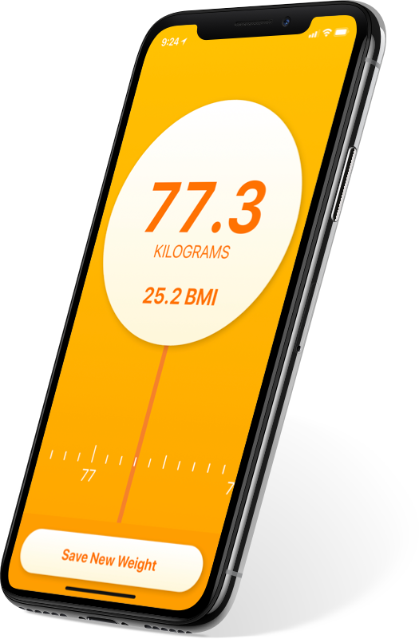
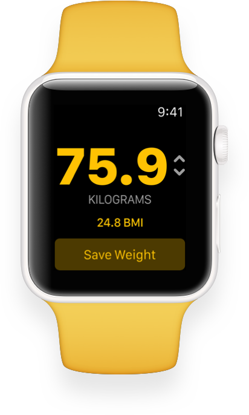

Simple Scales was born out of a desire to have a fast way to keep track of your weight inside HealthKit. Accomplishing this with other apps, even the Health app itself, is a slow task for something that should be quick and easy.
Saving your weight shouldn’t involves lots of taps and screens, especially if it’s something you do every day. That’s why a sliding scroller is an obvious choice. It’s immediately available, starts on your last saved weight, and allows you to enter small or large increments with equal control.
An Apple Watch app was a very natural extension. It fits in perfectly with watchOS’ goal of simple 2 second interactions. An added bonus was the Digital Crown makes changing your weight a breeze.
Since the initial release, there have been 4 major releases which have greatly improved the app in different ways. Whether that’s the addition of something big, like adding an Apple Watch app, or something small like switching to monospace fonts for a better feel when scrolling.
I experimented with different input methods and styles. I wanted to try different spinners to see what had the right feel. I ended up settling on the sliding tape because that felt the quickest and could be placed where your thumb sits on the screen.
The original design featured a spinner to enter your weight. In use the text was hard to read so I designed a more legible spinner that resembled the phone version of the app.
Why yellow? A major part of the app is the integration with Apple Health and I wanted to signal that by making the app the same colour as the Body Measurements category.